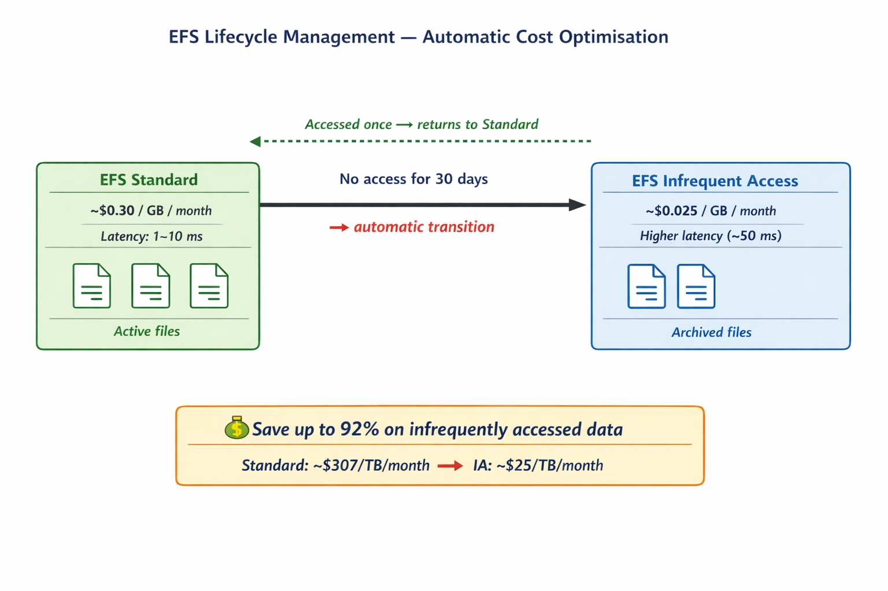

🚀 EXTENDED LAB TASKS
Complete Tasks 0–6 first. These extended tasks deepen your EFS knowledge beyond the original lab.
🔑 Ext. Task 1 — Fix File System Permissions
After mounting, the EFS root directory is owned by root. Try writing a file:
touch efs/test.txt
# Output: touch: cannot touch 'efs/test.txt': Permission denied
Fix ownership so ec2-user can write:
sudo chown ec2-user:ec2-user efs/
ls -ld efs/
Verify ec2-user is now the owner, then write again:
touch efs/test.txt
ls -la efs/
✅ The file appears. This chown step is almost always required after a fresh EFS mount. In production you would create subdirectories with appropriate ownership immediately after setup, per application requirements.
🐧 Ext. Task 2 — Explore File System with Linux Tools
Use standard Linux tools to inspect your EFS mount:
# Confirm NFS mount type and options
mount | grep efs
# Show all mounts with filesystem type (confirm nfs4 and 8.0E)
df -hT
# Show actual space used in your EFS directory
du -sh efs/
# List all contents with sizes, permissions, timestamps
ls -lah efs/
# Low-level mount info including all NFS options applied by Linux
cat /proc/mounts | grep efs
| df -hT column | What EFS shows | What it means |
|---|
| Filesystem | EFS DNS name (or 127.0.0.1 with helper) | Where the storage actually lives |
| Type | nfs4 | Confirms NFSv4 protocol is in use |
| Size | 8.0E | Elastic — no fixed provisioned size |
| Used | Actual bytes stored on EFS | What you're billed for |
| Avail | Always ~8.0E | Elastic — effectively unlimited |
| Mounted on | Your mount point path | Where Linux attaches the file system |
📝 Ext. Task 3 — Create Files and Directories
Practice building a directory structure on EFS — it works exactly like a local file system:
# Create and write files
echo "Hello from EFS" > efs/hello.txt
cat efs/hello.txt
# Create a structured directory layout
mkdir -p efs/project/{data,logs,config}
# Write to subdirectories
echo "data here" > efs/project/data/dataset1.txt
echo "app started" > efs/project/logs/app.log
# Verify structure
ls -R efs/
du -sh efs/
✅ Everything works exactly like a local file system. This is NFS's power — no application rewriting needed. If an app can write to a file path, it can use EFS without any code changes. This is why EFS works for legacy applications where S3 (which needs API calls) would not.
🖥️ Ext. Task 4 — Launch a Second EC2 Instance
This is the defining demonstration of EFS — two completely separate servers sharing the same files.
- EC2 → Instances → Launch instances.
- Configure:
- Name:
EFS-Test-Server-2 - AMI: Amazon Linux 2023
- Instance type: t2.micro
- Same VPC and subnet as Instance 1
- Security group: add EFSClient SG — this is the critical step that grants EFS access
- Launch, wait for Running state, then connect via EC2 Instance Connect.
- On Instance 2, install and mount EFS:
# On Instance 2 — same install and wait
sudo yum install -y amazon-efs-utils nfs-utils
# Wait 3 minutes, then:
sudo mkdir /efs
sudo mount -t nfs4 -o nfsvers=4.1,rsize=1048576,wsize=1048576,hard,timeo=600,retrans=2,noresvport fs-XXXXXXXX.efs.us-west-2.amazonaws.com:/ /efs
sudo chown ec2-user:ec2-user /efs
Verify Instance 2 sees what Instance 1 wrote:
ls /efs/
cat /efs/hello.txt
# Output: Hello from EFS
ls -R /efs/
# Shows the entire directory structure from Ext. Task 3
⚡ Both instances access the same EFS. Files written by one appear instantly on the other — no sync, no copy, no delay. This is the fundamental difference between EFS (shared) and EBS (exclusive).
🔄 Ext. Task 5 — Cross-Instance File Updates
Open both terminal sessions side by side. This is Screenshot #8 — the most memorable visual in the lab.
On Instance 1:
echo "update from Instance 1 — $(date)" >> /efs/shared.txt
cat /efs/shared.txt
Immediately on Instance 2:
cat /efs/shared.txt
# Shows the line from Instance 1 — instantly
On Instance 2, write back:
echo "reply from Instance 2 — $(date)" >> /efs/shared.txt
Back on Instance 1:
cat /efs/shared.txt
# Both lines visible
✅ Both instances read and write the same physical file in real time. This is the core value proposition of EFS for multi-instance architectures — no sync scripts, no polling, no copying, no eventual consistency delays.
📸 #8Two browser terminals side by side
Show: Instance 1 wrote to shared.txt — Instance 2 reads it instantly with cat /efs/shared.txt
🔁 Ext. Task 6 — Configure Automatic Mount After Reboot
The current mount disappears on reboot. To make it permanent, add an entry to /etc/fstab:
sudo nano /etc/fstab
Add this line at the bottom (replace fs-XXXXXXXX with your actual FS ID):
fs-XXXXXXXX:/ /home/ec2-user/efs nfs4 defaults,_netdev 0 0
Save and exit: Ctrl+X → Y → Enter
Test the entry without rebooting:
sudo umount efs/
sudo mount -a
df -hT | grep efs
❌ The _netdev option is not optional. Without it, Linux tries to mount EFS during early boot before the network interface and DNS are ready. The mount fails silently, the instance boots with an empty /efs directory, and if it's in an Auto Scaling Group, it fails its health check and gets terminated — triggering a cascade. Always include _netdev for any network file system in fstab.
📸 #11EC2 terminal — cat /etc/fstab
Show: Full fstab contents with your EFS entry — fs-XXXXX:/ path nfs4 defaults,_netdev 0 0
🔄 Ext. Task 7 — Test Mount Persistence
sudo reboot
Your session disconnects. Wait 2 minutes, then reconnect via EC2 Instance Connect and verify:
df -hT | grep efs
cat efs/hello.txt
ls efs/project/
✅ EFS appears in df, your files are visible — fstab worked. The mount survived the reboot automatically with no manual intervention. This is exactly how production instances work in Auto Scaling Groups.
❌ EFS not mounted after reboot? cat /etc/fstab — check the entry exists, FS ID is correct, and _netdev is present. Run sudo mount -a to manually apply and see any error messages.
🖥️ Ext. Task 8 — Explore EFS Console Features
Go to EFS → File Systems → your file system and explore each tab:
| Tab | What to Look At | Real-World Use |
|---|
| General | FS ID, total size, throughput mode, encryption status, performance mode | Confirm encryption is on for compliance; check throughput mode before go-live |
| Network | Mount targets — AZ, subnet, private IP, SG, DNS name, status | These private IPs are what EC2 actually TCP-connects to on port 2049 |
| File system policy | Resource-based IAM policy | Enforce TLS-only access and restrict by IAM role in production |
| Access points | Logical entry points with enforced root directory and POSIX user | Isolate each container's view of EFS (used heavily in ECS and EKS) |
| Monitoring | Built-in CloudWatch graphs for throughput, I/O, connections, burst credits | First place to check when users report slow file access |
| Replication | Cross-region replication configuration | Disaster recovery — replicate EFS to another AWS region automatically |
💡 Check the Monitoring tab — the BurstCreditBalance graph shows the rise and fall of your burst credits. You should see it drop sharply during your fio test and slowly rise when you weren't doing I/O.
🔎 Ext. Task 9 — Investigate File System Activity
# Show all NFS mounts with their applied options
mount | grep nfs
# Show NFS client statistics — ops, retransmissions, timeouts
nfsstat -c
# Show which processes have files open on EFS (for debugging "device busy" errors)
sudo lsof | grep efs
# Show inode (file count) usage
df -i efs/
# Show active TCP connections to the NFS mount target
ss -tn | grep 2049
💡 When is lsof useful in production? When sudo umount efs returns "device or resource busy" — sudo lsof | grep efs immediately shows which process holds a file handle. Kill that process, then unmount cleanly. Saves significant debugging time on production incidents.
💡 What does nfsstat show? NFS client statistics including read/write operation counts and retransmission counts. High retransmissions in production indicate network instability between EC2 and the mount target — a sign to investigate VPC routing or security groups.
🔌 Ext. Task 10 — Try the EFS Helper Mount Method
The professor encourages comparing both mount methods. Unmount the current NFS client mount and try the EFS helper:
# Unmount current
sudo umount efs/
# Mount using EFS helper (much simpler command)
sudo mount -t efs fs-XXXXXXXX:/ efs
# Verify
sudo df -hT
Notice the filesystem source in df output is now 127.0.0.1:/ instead of the EFS DNS name. The EFS helper starts a local stunnel proxy that wraps NFS traffic in TLS encryption before forwarding to EFS. The loopback address (127.0.0.1) is the local proxy — this is expected, not an error.
| Aspect | NFS Client (Task 4) | EFS Helper (Ext. 10) |
|---|
| df source shown | EFS DNS name | 127.0.0.1 (loopback proxy) |
| Encryption in transit | No | Yes (TLS via stunnel) |
| Mount command length | Long with many options | Short and simple |
| IAM auth support | No | Yes (with EFS Access Points) |
| Protocol underneath | NFSv4.1 | NFSv4.1 (same) |
✅ Both methods use NFSv4.1 underneath. The EFS helper adds security and simplicity on top. For production workloads, the EFS helper is recommended — it handles TLS automatically and is the basis for IAM-authenticated access via Access Points.
☁️ Ext. Task 11 — Manage EFS Entirely from the AWS CLI
⚡ Real-world context: Cloud engineers rarely use the console in production. Infrastructure is created, queried, and deleted via CLI so it can be scripted, version-controlled, and audited. This task teaches you the EFS CLI surface — every action you did in the console, redone in the terminal.
First confirm the AWS CLI is available and your identity:
aws --version
aws sts get-caller-identity
The second command shows your account ID, user ARN, and assumed role. If it returns an error your EC2 instance may not have an IAM role attached — check with your trainer.
Describe your existing file system
# List all EFS file systems in this region
aws efs describe-file-systems
# Filter to just the important fields
aws efs describe-file-systems \
--query "FileSystems[*].{ID:FileSystemId,Name:Name,Size:SizeInBytes.Value,State:LifeCycleState}" \
--output table
💡 What is --query? It is a JMESPath expression — a way to filter and reshape JSON output. FileSystems[*] means "all items in the FileSystems array". .{ID:FileSystemId} renames the field to "ID" in the output. This is how you extract only the data you need from verbose AWS API responses without writing extra code.
Describe mount targets
# Replace fs-XXXXXXXX with your actual FS ID
aws efs describe-mount-targets \
--file-system-id fs-XXXXXXXX
# Show just AZ, state, and IP
aws efs describe-mount-targets \
--file-system-id fs-XXXXXXXX \
--query "MountTargets[*].{AZ:AvailabilityZoneName,IP:IpAddress,State:LifeCycleState}" \
--output table
Check lifecycle configuration
aws efs describe-lifecycle-configuration \
--file-system-id fs-XXXXXXXX
If you set lifecycle to None during creation, this returns an empty rules array — confirming no automatic file tiering is configured.
Add tags via CLI
aws efs tag-resource \
--resource-id fs-XXXXXXXX \
--tags Key=Environment,Value=Lab Key=Owner,Value=YourName
# Verify
aws efs list-tags-for-resource \
--resource-id fs-XXXXXXXX
💡 Why tags matter in production: AWS bills are line items with no context. Tags like Environment=Production and Team=Backend let Finance allocate costs to the right team. Without tags a $4,000 EFS bill is a mystery. With tags it is attributed immediately.
Create a second EFS file system via CLI (optional)
aws efs create-file-system \
--performance-mode generalPurpose \
--throughput-mode bursting \
--tags Key=Name,Value=cli-created-efs
# Copy the FileSystemId from output, then delete when done
aws efs delete-file-system --file-system-id fs-YYYYYYYY
✅ You just performed the same actions as the console but in commands you can paste into a script, check into Git, or run in a CI/CD pipeline. This is how production infrastructure is managed.
🔍 Ext. Task 12 — Use tcpdump to Watch NFS Traffic Live
⚡ Real-world context: When a mount mysteriously hangs or slows down, network engineers use packet capture to see exactly what is happening at the wire level. This task demystifies NFS — you will watch the actual protocol packets flowing between your EC2 and the EFS mount target.
NFS runs on TCP port 2049. tcpdump captures network packets in real time. You will run the capture in one terminal and trigger NFS activity in another.
Step 1 — Open two terminal sessions
Open a second EC2 Instance Connect tab to the same instance. You need Terminal A for the capture and Terminal B for file operations.
Step 2 — Start the capture in Terminal A
# -i any = all network interfaces
# -n = do not resolve hostnames (faster output)
# -v = verbose: show more protocol detail
sudo tcpdump -i any -n -v port 2049
A few lines appear immediately — this is background NFS keepalive traffic. Leave the capture running.
Step 3 — Trigger file I/O in Terminal B
echo "tcpdump test $(date)" > /efs/tcpdump-test.txt
cat /efs/tcpdump-test.txt
cp /etc/hosts /efs/hosts-copy.txt
Step 4 — Read the capture output in Terminal A
You should see a burst of packets after each command. Key patterns to spot:
# TCP handshake to mount target port 2049
IP 10.0.1.50.XXXX > 10.0.1.45.2049: Flags [S] # SYN from EC2
IP 10.0.1.45.2049 > 10.0.1.50.XXXX: Flags [S.] # SYN-ACK from EFS
# NFS protocol operations
NFS reply ok 128 getattr... # metadata lookup
NFS reply ok 128 write... # actual data write
Press Ctrl+C in Terminal A to stop.
Save to file and review
# Save capture to file
sudo tcpdump -i any -n port 2049 -w /tmp/nfs-capture.pcap &
PID=$!
sleep 5
echo "test" > /efs/capture-test.txt
sleep 2
sudo kill $PID
# Read saved capture
sudo tcpdump -r /tmp/nfs-capture.pcap -n | head -30
💡 What you learned: Every echo, cat, or touch on EFS generates multiple NFS protocol operations: LOOKUP (find the path), GETATTR (check metadata), WRITE or READ (data), SETATTR (update timestamps). A single ls -la on a directory with 100 files can generate 100+ NFS operations — this is why EFS latency matters at scale.
❌ Interview question: "Is NFS traffic encrypted in transit by default?" No — the NFS client mount sends data unencrypted. Only the EFS helper (mount -t efs) adds TLS via stunnel. If you captured with the EFS helper active you would see encrypted TLS packets instead of readable NFS protocol text.
🔒 Ext. Task 13 — Test File Locking on EFS (POSIX Compliance)
⚡ Real-world context: Databases, CMS platforms, and config management tools rely on file locking to prevent two processes from writing the same file simultaneously. EFS supports POSIX advisory locks — this task proves it works correctly across separate EC2 instances.
Test 1 — Exclusive lock with flock
Run this on Instance 1:
# Acquire an exclusive lock on a file and hold it for 30 seconds
flock -x /efs/locktest.txt -c "echo Instance 1 holds lock; sleep 30; echo Instance 1 released"
While that is running, on Instance 2:
# Try to acquire the same lock — this blocks until Instance 1 releases
flock -x /efs/locktest.txt -c "echo Instance 2 got the lock"
✅ Instance 2 waits silently until Instance 1's 30-second sleep finishes, then immediately acquires the lock and prints its message. This is advisory file locking working correctly across two separate EC2 instances through EFS.
Test 2 — Non-blocking lock attempt
# -n = non-blocking: give up immediately if lock is held
flock -n /efs/locktest.txt echo "got the lock" || echo "lock is busy — try again later"
Run this on Instance 2 while Instance 1 holds the lock. You see "lock is busy" immediately. This is how production applications avoid deadlocks: try, fail fast, retry after a short delay.
Test 3 — Verify POSIX permissions inheritance
mkdir -p /efs/shared-dir
chmod 755 /efs/shared-dir
touch /efs/shared-dir/test.txt
ls -la /efs/shared-dir/
# Check umask is respected
umask 022
touch /efs/shared-dir/umask-test.txt
ls -la /efs/shared-dir/umask-test.txt
# Should show -rw-r--r-- (644)
💡 Why this matters for interviews: "Is EFS POSIX-compliant?" Yes — it supports Unix permissions (rwx), ownership (user/group), file locking (flock/fcntl), symlinks, and special files. This is exactly why applications running on local disk can move to EFS with zero code changes. S3 is not POSIX-compliant — it has no permissions, locking, or file metadata concepts.
🔬 Ext. Task 14 — Trace System Calls with strace
⚡ Real-world context: When an application writes a file and you want to know exactly what happens at the OS level — which syscalls are made, in what order, how long each takes — strace is the tool. It shows you the conversation between your application and the Linux kernel, making the invisible visible.
Install strace
sudo yum install -y strace
Trace a write to EFS
# -e trace=file = show only file-related syscalls
# -T = show time spent in each syscall
# Output goes to stderr so we redirect it
strace -e trace=file -T -o /tmp/strace-efs.txt bash -c 'echo hello > /efs/strace-test.txt'
cat /tmp/strace-efs.txt
Look for these system calls in the output:
| Syscall | What it does | NFS equivalent |
|---|
openat() | Opens the file for writing | NFS OPEN operation |
write() | Writes bytes to the file descriptor | NFS WRITE operation |
close() | Closes and flushes the file | NFS CLOSE + COMMIT |
stat() | Gets file metadata | NFS GETATTR operation |
getdents() | Reads directory entries | NFS READDIR operation |
Compare latency: local disk vs EFS
# Write to local disk
strace -e trace=write -T bash -c "echo test > /tmp/local.txt" 2>&1 | grep "write("
# Write to EFS
strace -e trace=write -T bash -c "echo test > /efs/network.txt" 2>&1 | grep "write("
Compare the time values in angle brackets at the end of each line. Local disk completes in microseconds; EFS in milliseconds. This is the network latency cost of shared storage visible at the syscall level.
✅ Key insight from strace: Your application does not "know" it is writing to EFS. It calls the same write() syscall as for a local file. The Linux kernel NFS client intercepts it and translates it into NFS protocol operations over the network. This is exactly how EFS achieves zero-code-change compatibility — the OS handles all translation invisibly.
📊 Ext. Task 15 — Structured Performance Benchmarking
⚡ Real-world context: Before going to production, engineers run structured benchmarks to understand their storage performance envelope — what throughput, IOPS, and latency to expect under different workloads. Running only one test (like the original lab fio) gives an incomplete picture.
Test 1 — Sequential large writes (video processing, backups)
sudo fio --name=seq-write \
--filename=/efs/bench-seq-write.img \
--filesize=1G --bs=4M \
--rw=write --direct=1 \
--ioengine=libaio --iodepth=32 --numjobs=1
Test 2 — Random small reads (web server serving many small files)
sudo fio --name=rand-read \
--filename=/efs/bench-seq-write.img \
--filesize=1G --bs=4K \
--rw=randread --direct=1 \
--ioengine=libaio --iodepth=64 --numjobs=1
Test 3 — Mixed read/write (typical OLTP database pattern)
sudo fio --name=mixed-rw \
--filename=/efs/bench-mixed.img \
--filesize=512M --bs=4K \
--rw=randrw --rwmixread=70 \
--direct=1 --ioengine=libaio \
--iodepth=32 --numjobs=2
Interpret results
| Test Pattern | Key metric | Good EFS result | If poor, check |
|---|
| Sequential large write | bw (MB/s) | 50–500+ MB/s | Burst credits — check BurstCreditBalance |
| Random small read | iops + clat (ms) | 1000+ IOPS, <10ms lat | General Purpose mode handles this best |
| Mixed rw | read/write split in summary | Proportional to 70/30 mix | Write latency higher than read is normal on NFS |
❌ Never benchmark twice back-to-back without a 5–10 minute gap. The first run depletes burst credits. The second run is throttled and gives misleading results that do not reflect real production behaviour where I/O is spread over time.
💡 Clean up benchmark files when done — they cost money on EFS: sudo rm /efs/bench-*.img
🧱 Ext. Task 16 — Simulate and Debug NFS Connectivity Failures
⚡ Real-world context: Network engineers use controlled failure injection to verify monitoring and recovery procedures before an actual incident. This task teaches you to deliberately break NFS, observe the symptoms, diagnose the cause, and fix it — the exact workflow used in production incidents.
Failure Scenario — Block port 2049 with iptables
This simulates what happens when a firewall rule change accidentally blocks NFS — a common production incident cause.
# Confirm EFS is working
echo "before block" > /efs/firewall-test.txt
cat /efs/firewall-test.txt
# Block outbound TCP to port 2049
sudo iptables -A OUTPUT -p tcp --dport 2049 -j DROP
echo "iptables rule added — NFS is now blocked"
Try to write to EFS:
# This will hang — press Ctrl+C after 10 seconds
echo "this will hang" > /efs/firewall-test.txt
❌ The command hangs exactly like a security group problem — because the root cause is identical: a firewall dropping TCP packets to port 2049. The application cannot distinguish between OS-level (iptables), VPC-level (security group), or physical network drops.
Diagnose the block
# See the DROP rule
sudo iptables -L OUTPUT -n --line-numbers
# Test reachability to mount target IP
# Get mount target IP from: mount | grep efs | awk "{print $1}"
sudo nc -zv <MOUNT_TARGET_IP> 2049
Fix it
# Remove the DROP rule
sudo iptables -D OUTPUT -p tcp --dport 2049 -j DROP
# Verify gone
sudo iptables -L OUTPUT -n
# Verify EFS works again
echo "fixed" > /efs/firewall-test.txt
cat /efs/firewall-test.txt
Monitor NFS retransmissions
# Watch NFS client stats in real time
watch -n 2 "nfsstat -c | head -20"
# In another terminal — generate some I/O
for i in $(seq 1 50); do echo "line $i" >> /efs/stress-test.txt; done
✅
The diagnostic checklist for a hanging NFS mount:- Security group on mount target? → EFS console → Network tab
- iptables blocking port 2049? →
sudo iptables -L OUTPUT -n | grep 2049 - DNS resolving? →
nslookup fs-XXXXX.efs.REGION.amazonaws.com - Mount target available? → EFS console → Network tab → Status column
- NFS daemons running? →
sudo systemctl status nfs
Work through this list top to bottom — it covers 95% of real NFS incidents.
🔄 Ext. Task 17 — Migrate Data onto EFS with rsync
⚡ Real-world context: When a company moves from a single-server setup to a load-balanced fleet, the first task is migrating existing files from local storage onto EFS. rsync is the standard tool — it copies files efficiently and on re-runs only transfers what changed, making it suitable for live migrations.
Step 1 — Create sample local data
mkdir -p /tmp/app-data/{uploads,config,logs,assets}
echo "app config v1" > /tmp/app-data/config/app.conf
echo "db config" > /tmp/app-data/config/db.conf
for i in $(seq 1 10); do echo "log entry $i" > /tmp/app-data/logs/app-$i.log; done
echo "logo" > /tmp/app-data/assets/logo.png
echo "user upload" > /tmp/app-data/uploads/file1.pdf
echo "Created $(find /tmp/app-data -type f | wc -l) files"
Step 2 — Initial migration to EFS
# -a = archive (preserves permissions, timestamps, symlinks, ownership)
# -v = verbose
# -h = human-readable sizes
# --progress = show transfer progress per file
rsync -avh --progress /tmp/app-data/ /efs/app-data/
Step 3 — Verify completeness
echo "Source: $(find /tmp/app-data -type f | wc -l) files"
echo "EFS: $(find /efs/app-data -type f | wc -l) files"
# Deep comparison — no output means files are identical
diff -r /tmp/app-data/ /efs/app-data/
Step 4 — Delta sync (only changed files)
# Modify one file locally
echo "app config v2 — $(date)" > /tmp/app-data/config/app.conf
# rsync again — only the changed file is transferred
rsync -avh --progress /tmp/app-data/ /efs/app-data/
Step 5 — Dry run before a real migration
# --dry-run shows what WOULD be transferred without doing it
rsync -avh --dry-run /tmp/app-data/ /efs/app-data/
✅ Production migration pattern: (1) rsync --dry-run → review what will transfer. (2) rsync with --progress → initial full migration. (3) Schedule rsync in cron → keep EFS in sync during cutover window. (4) Flip the load balancer → traffic now hits servers reading from EFS. (5) Stop the cron sync → migration complete.
💡 AWS DataSync vs rsync: For terabytes of data, AWS DataSync is purpose-built with parallelism, scheduling, and native EFS integration. For small migrations (under a few GB) or when you are already on EC2, rsync is simpler and free.
🔑 Ext. Task 18 — Create and Use an EFS Access Point
⚡ Real-world context: Access Points are one of the most important EFS production features. They let you give different applications a different isolated view of the same EFS — each sees only its own directory, with enforced POSIX ownership, even if the container runs as root. Used heavily in ECS, EKS, and Lambda.
What is an Access Point?
An Access Point is a named entry into EFS that enforces three things: a root directory (the app sees / but is actually inside /app1 on the real EFS), a POSIX user identity (all writes appear to come from a specific UID/GID regardless of who wrote them), and automatic directory creation (the directory is created if it does not exist).
Create an Access Point via CLI
aws efs create-access-point \
--file-system-id fs-XXXXXXXX \
--posix-user Uid=1000,Gid=1000 \
--root-directory "Path=/app1,CreationInfo={OwnerUid=1000,OwnerGid=1000,Permissions=755}" \
--tags Key=Name,Value=app1-access-point
# Note the AccessPointId in the output: fsap-XXXXXXXXX
Mount using the Access Point
sudo mkdir /efs-app1
# Requires EFS helper (mount -t efs)
sudo mount -t efs \
-o tls,accesspoint=fsap-XXXXXXXXX \
fs-XXXXXXXX:/ /efs-app1
ls -la /efs-app1/
df -hT | grep efs
💡 What you will notice: The /efs-app1 mount looks like the root of a file system but is actually just the /app1 subdirectory of your EFS. You cannot navigate above it with cd .. This isolation is the key security benefit — a compromised container cannot read files belonging to other applications on the same EFS.
Test POSIX user enforcement
echo "written via access point" > /efs-app1/test.txt
ls -lan /efs-app1/test.txt
# Shows UID 1000 regardless of who you are
Clean up
sudo umount /efs-app1
aws efs delete-access-point --access-point-id fsap-XXXXXXXXX
✅ Interview answer — "How do you isolate multiple apps on a shared EFS?" Create one Access Point per application, each pointing to a different subdirectory with its own POSIX UID/GID. Mount each Access Point in its container via the EFS CSI driver (Kubernetes) or ECS task definition volume. Each app sees its own isolated file system root and ownership is enforced at the storage layer.
🐛 Ext. Task 19 — Systematic Debugging Workflow
⚡ Interview scenario: "A developer calls you. They deployed a new version an hour ago. Users report that files uploaded by one server are not visible on others. Walk me through how you diagnose this." This task is that exact workflow — hands-on.
Step 1 — Verify both mounts are actually active and matching
# On both instances — confirm EFS is in the mount table
mount | grep nfs
df -hT | grep nfs
# Are they pointing to the SAME file system ID?
mount | grep efs | awk "{print $1}"
❌ Common finding: Instance 2 shows EFS mounted but to a different FS ID. Someone created a second EFS during testing and it got baked into the launch template. Both instances have EFS mounted — but to different file systems. Files will never be shared.
Step 2 — Verify writes go to the mount, not local disk
# Is the app writing to /efs (EFS) or /var/www (local disk)?
stat /efs
df /efs
# filesystem column must show nfs4, not ext4 or xfs
Step 3 — Write a timestamped probe file and check from the other side
# On Instance 1
echo "probe from $(hostname) at $(date +%s)" > /efs/debug-probe.txt
cat /efs/debug-probe.txt
# Immediately on Instance 2
cat /efs/debug-probe.txt
# File missing or showing old content = instances are on different file systems
Step 4 — Check what the app is actually writing to
# Find open file handles for Apache (or your app process)
sudo lsof -p $(pgrep httpd | head -1) 2>/dev/null | grep -E "efs|upload|www"
# Find recently modified files on EFS
find /efs -newer /efs/debug-probe.txt -type f 2>/dev/null | head -20
Step 5 — Check NFS health metrics
nfsstat -c 2>/dev/null | grep -E "retrans|timeout"
cat /proc/mounts | grep efs
Decision table
| Finding | Root Cause | Fix |
|---|
| Different FS IDs on each instance | Wrong launch template or user data script | Update launch template with correct FS ID, re-launch instances |
| df shows ext4 not nfs4 | App writing to local disk — mount not happening | Fix fstab or user data script |
| App writes to /var/www not /efs | App config has hardcoded local path | Symlink /var/www/uploads to /efs/uploads or update app config |
| High retransmissions | Network instability to mount target | Check VPC routing, SG, NACL on mount target subnet |
✅ The answer to "files not shared between instances" is almost never a single command. It is a systematic elimination process — verify the mount exists, verify it is the right mount, verify writes go to it, verify the network is healthy. Each step either confirms or eliminates a hypothesis.
🌍 Ext. Task 20 — Real-World Pattern: Atomic Config File Propagation
⚡ Real-world context: A fleet of 20 web servers all need to pick up a config change without restarting. EFS makes this simple — update one file and every server reading it sees the new version on the next read cycle. This task builds that pattern and shows the correct atomic update technique.
Step 1 — Create shared config on EFS (both instances)
mkdir -p /efs/config
cat > /efs/config/app.conf << EOF
version=1.0
debug=false
max_connections=100
log_level=warn
EOF
cat /efs/config/app.conf
Step 2 — Simulate the app polling config (Instance 2)
while true; do
echo "$(date +%H:%M:%S) version: $(grep version /efs/config/app.conf)"
sleep 3
done
Leave this running. It prints the current version every 3 seconds.
Step 3 — Push a config update (Instance 1)
cat > /efs/config/app.conf << EOF
version=2.0
debug=true
max_connections=500
log_level=debug
EOF
echo "Config updated to v2.0 at $(date)"
Watch Instance 2 — within 3 seconds it prints version=2.0. No deployment, no restart, no cache invalidation needed.
Step 4 — Atomic config update (the correct production pattern)
❌ Never write directly to the live config file in production. Direct writes create a race condition — a server might read a half-written file mid-write and crash. The correct pattern is write-then-rename.
# Write new config to a temp file first
cat > /efs/config/app.conf.new << EOF
version=3.0
debug=false
max_connections=750
log_level=info
EOF
# Atomically rename — on POSIX file systems this is a single OS operation
# A reader sees either the old file or the new file — never a partial write
mv /efs/config/app.conf.new /efs/config/app.conf
echo "Atomic update to v3.0 complete"
✅ mv (rename) is atomic on POSIX file systems including EFS. A reader either gets the old version or the new version, never a half-written file. This is the correct pattern for all production config updates via shared storage.
💡 Real-world users of this pattern: Nginx config reloads, HAProxy rule updates, feature flag files, A/B testing parameters, database connection strings, TLS certificate rotation. Any time you need config to propagate to a fleet instantly without restart, EFS plus atomic rename is the pattern.
⚡ Ext. Task 21 — inotify: React to File Changes in Real Time
⚡ Real-world context: Instead of polling a file every N seconds, applications can use inotify to get an instant OS notification the moment a file changes. This is how file watchers, hot reload in development servers, and real-time processing pipelines work.
Install inotify-tools
sudo yum install -y inotify-tools
Watch a file for changes (Instance 2)
# -m = monitor continuously
# -e modify,create,delete = which events to watch
inotifywait -m -e modify,create,delete /efs/config/app.conf
On Instance 1, make a change:
echo "updated" >> /efs/config/app.conf
Instance 2 immediately prints the event — file path, event type (MODIFY), filename. No polling delay.
Build a simple file processor
mkdir -p /efs/incoming /efs/processed
# Watch for new files and process them as they arrive
inotifywait -m -e close_write /efs/incoming/ --format "%f" | while read FILENAME; do
echo "Processing: $FILENAME"
mv /efs/incoming/$FILENAME /efs/processed/$FILENAME
echo "Done: $FILENAME at $(date)"
done &
# Drop files into incoming from another terminal
echo "job1" > /efs/incoming/job1.txt
echo "job2" > /efs/incoming/job2.txt
sleep 2
ls /efs/processed/
✅ Both files appear in /efs/processed immediately. This pattern is used in media transcoding pipelines, document processing systems, and ETL workflows. Any instance in the fleet can watch the same EFS directory, and load can be distributed by having multiple workers pick up different files.
💡 inotify limitation on NFS: inotify works reliably when the writing and watching processes are on the same EC2 instance. For cross-instance notifications (Instance A writes, Instance B gets the inotify event), behaviour depends on the kernel version and NFS mount options — test carefully. For reliable cross-instance event delivery, use SQS to signal file arrival instead of relying on inotify across NFS.
💰 Ext. Task 22 — EFS Cost Optimisation: Lifecycle Management
⚡ Real-world context: EFS Standard storage costs ~$0.30/GB/month. EFS Infrequent Access (IA) costs ~$0.025/GB/month — 8× cheaper. Lifecycle Management automatically moves files that have not been accessed in N days to IA storage. For log archives, old uploads, or infrequently read config files, this can cut your EFS bill by 80% or more.
EFS storage classes explained
| Storage Class | Cost (approx) | Latency | Best for |
|---|
| EFS Standard | ~$0.30/GB/month | Low (1–10ms) | Actively accessed files |
| EFS Standard-IA | ~$0.025/GB/month | Higher (tens of ms) | Files not accessed in 30+ days |
| EFS One Zone | ~$0.16/GB/month | Low | Dev/test — single AZ, no HA |
| EFS One Zone-IA | ~$0.013/GB/month | Higher | Dev/test archive — lowest cost option |

Figure 9: EFS Lifecycle Management — files idle for 30 days move to IA automatically. With Intelligent Tiering enabled, they return to Standard on first access.
Enable Lifecycle Management via CLI
# Move files to IA after 30 days without access
aws efs put-lifecycle-configuration \
--file-system-id fs-XXXXXXXX \
--lifecycle-policies TransitionToIA=AFTER_30_DAYS
# Verify
aws efs describe-lifecycle-configuration \
--file-system-id fs-XXXXXXXX
Check storage class breakdown
aws efs describe-file-systems \
--file-system-id fs-XXXXXXXX \
--query "FileSystems[0].SizeInBytes"
The output shows three values: Value (total bytes), ValueInIA (bytes in Infrequent Access), ValueInStandard (bytes in Standard). In the lab ValueInIA is 0 because files have not been idle for 30 days — but in production this is where you track cost savings.
Enable Intelligent Tiering (moves back when accessed)
aws efs put-lifecycle-configuration \
--file-system-id fs-XXXXXXXX \
--lifecycle-policies TransitionToIA=AFTER_30_DAYS,TransitionToPrimaryStorageClass=AFTER_1_ACCESS
✅ Production recommendation: Enable Lifecycle Management on all EFS file systems at creation time. Use AFTER_30_DAYS for most workloads. Add TransitionToPrimaryStorageClass=AFTER_1_ACCESS so files move back to Standard as soon as they are read — preventing IA latency from ever surprising your application.
💡 SAA-C03 exam tip: EFS Lifecycle Management automatically moves files between Standard and IA storage classes based on last-access time. You cannot manually move individual files. There is no minimum file size for IA transition. IA storage still has the same durability and availability as Standard — only the latency and cost differ.